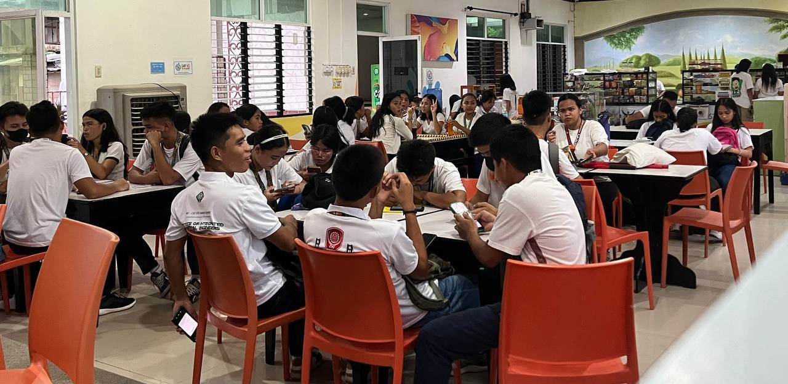
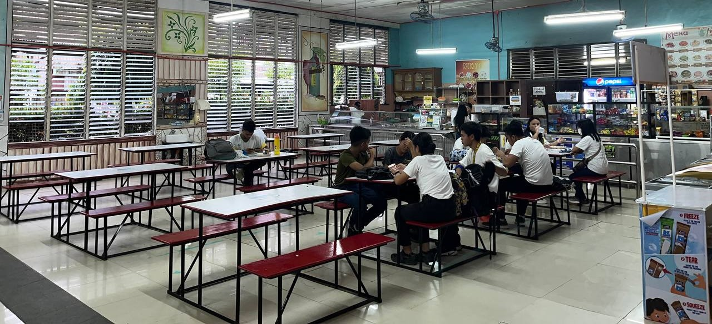

CTU Danao Bistro: Where Everyone Is Welcome!
The Ctu Danao Bistro offers variety of foods that hits home and comfort foods like ice cream if you are having a bad day.
THE BISTRO
Nestled within the bustling corridors of our campus lies a treasure trove of aromas, flavors, and camaraderie—the canteen.
Much more than a mere pit stop for nourishment, this vibrant space pulsates with energy, serving as the epicenter of our campus culture.
Step through the canteen's doors, and a symphony of scents greets you—a melange of spices, sizzling griddles, and freshly brewed coffee.
The gastronomic haven houses a myriad of culinary delights, catering to diverse palates and dietary preferences.
From savory delicacies to guilt-laden desserts,
the menu is a tapestry of cuisines, offering comfort food, regional specialties, and health-conscious options alike.
Yet, this space transcends the provision of meals. It’s a melting pot where students, faculty, and staff converge,
forging connections beyond the confines of classrooms or offices.
Conversations flow freely, debates find their voice, and friendships blossom over shared meals.

The Pulse of Campus Life
Throughout the day, the canteen morphs, adapting its ambiance to the rhythm of campus life.
Mornings witness a flurry of activity as students grab quick bites before classes, while afternoons herald a relaxed vibe with discussions spilling over from lectures.
As dusk approaches, it transforms into a cozy retreat, offering solace to those seeking respite after a long day.
What makes this canteen truly special is its ability to encapsulate the campus’s diversity. It isn’t just about the food;
it’s a celebration of cultures, traditions, and backgrounds. Here, you might overhear discussions in various languages,
witness the exchange of culinary secrets, or find a corner serving traditional dishes from distant lands.
But it’s not just about the food or the atmosphere—it’s about fostering a sense of community.
The canteen serves as a canvas where memories are painted, friendships are sealed, and ideas are born.
It's a space that encapsulates the essence of the campus—a microcosm of the vibrant tapestry that defines our academic haven.
It is a place to unwind, or simply yearn for a sense of belonging, the canteen invites you to embark on this flavorful journey.
It’s more than just a place to dine; it’s the beating heart of our campus, pulsating with life, stories, and the spirit of togetherness.
Welcome to the canteen—where every meal is a story waiting to unfold, and every encounter is a brushstroke on the canvas of our campus life.
Created by: Shaina Del Mar BSCpE 3B Night